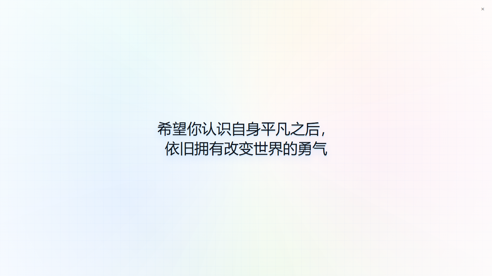

01
打开就能写
顶部菜单只保留文件、插件、操作、设置和帮助；新建文本后，光标直接落在内容区。
Windows 桌面笔记
Super Note 把文字、画板和搜索放进一个安静的工作空间。打开就写，随时展开，思路不必被窗口打断。
当前版本 v0.1.19 · 免费使用

界面与操作
常用操作放在看得见的位置，复杂能力收进需要时才出现的菜单。
01
顶部菜单只保留文件、插件、操作、设置和帮助；新建文本后，光标直接落在内容区。
02
标签可以放在顶部，也可以收进左侧；拖动即可排序，右键即可置顶、改名或定位文件。
03
搜索、窗口置顶和夜间模式集中在右上角；缩放反馈提供即时倍率与一键恢复。
为专注留出空间
本地优先，自动保留工作区。需要时打开文件，完成后回到同一个位置。Super Note 让工具退到背景，让内容留在手边。
版本更新
滚动滚轮，让版本沿着时间之环来到眼前。
补齐客户端自动更新配置，让检测、下载与后续升级保持连贯。
导航区域更协调、更紧凑，常用文件可置顶分组并随工作区保存。
让新建文本保存后的名称更符合当前上下文，同时收紧标签右键菜单。
常用操作更易发现，文件保存位置更可控，两种布局保持一致体验。
让侧栏更贴合不同工作空间，并让全屏和文本缩放状态清晰可控。
让标签顺序更自由、布局更灵活，并让常用文本文件更自然地融入 Windows。
让主题、文字和图片在同一张画板上自由组织，并让样式配置更快、更稳定。
修复更新提示、统一内容字体，并增强文本模块的选中、字号和 Markdown 预览体验。
让工作区保存、文件变化处理和 Markdown 阅读更加稳定直接。
集中优化标签操作、全屏弹窗与 Windows 文件体验。
让高频切换、托盘访问与窄窗口操作更加直接。
补齐编辑器中的链接操作、定位与右键菜单细节。
统一应用视觉，并让全屏内容拥有完整的展示空间。
建立应用内更新与快速唤起的完整链路。
改善长文本阅读与编辑时的空间感。
按系统版本提供更清晰的安装选择。
让官网同时承担产品介绍与下载入口。
Super Note 的核心工作区在这一版成形。